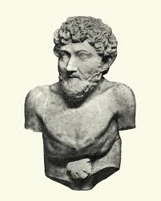

(S. VI a.C.) Escritor griego. Uno de los más antiguos géneros de la literatura universal es la fábula, un tipo de relato breve protagonizado por animales personificados cuya finalidad didáctica se explicita en una moraleja final.
Hasta muchos siglos después no se dudó de la existencia efectiva de ambos, señalando además la perfecta antítesis entre las dos figuras: Homero como cantor de las gestas de los héroes , Esopo como retratista de la plebe y de las debilidades humanas bajo aspecto de animales.
| Fábula | Moraleja |
|---|---|
| La zorra y las uvas | Es fácil despreciar lo que no se puede conseguir. |
| El león y el ratón | No menosprecies a los demás por su tamaño o condición; todos pueden ser útiles en algún momento. |
| El cuervo y el zorro | No te dejes engañar por la adulación. |
| El lobo y el cordero | La fuerza no siempre es justa. |
| La liebre y la tortuga | La perseverancia puede superar la velocidad y la arrogancia. |
| La lechera y su cántaro | Nuestros sueños y planes no deben apartarnos de la realidad. |
| Mi pobre viejecita | Debemos valorar lo que tenemos y no quejarnos sin razón. |